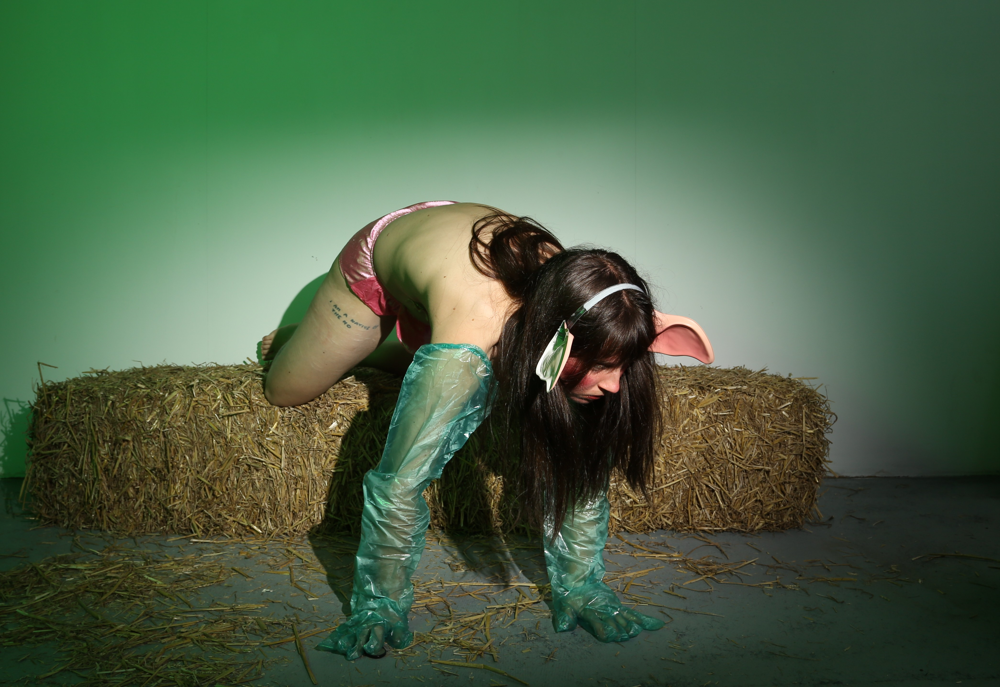

The Joke (Lust in The Slaughterhouse), 2026
Lust in The Slaughterhouse is an ongoing project referencing the cold and inorganic ways that captive animals are forced to breed, lacking any real physical touch or emotional connection, reduced to simply an organic body that is expected to act as a machine. Farmers use semen collection “dummy sows” on boars for artificial reproduction. These are barren metal structures that a boar mounts, as if copulating with a female pig, until he ejaculates and his semen is collected. The semen is then artificially inseminated into the female, for which silicone practice dummies are used by the farmers to practice artificial insemination (this model looks similar to a human sex doll, but it is modeling a female pig).The female’s body being completely replaceable references the objectification of the female body and its sexual exploitation; structures that pertain as much to feminism as animal politics.
In this photo series, dressed in costume shop accessories of pig ears and pig-snout underwear, and artificial insemination gloves, I am referencing the ways that the pig is mocked and objectified by humans: the mental detachment of the animal body from its sentience. I equate my female body with that of the sow’s, as a vessel that must take the pounding it recieves.
